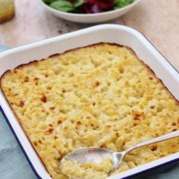

Odin Recipes
Mac and Cheese

Description
Macaroni pasta covered in creamy cheese sauce. Easy to cook in a short time!
Ingredients
- 300g macaroni
- 30g butter
- 25g flour
- 500ml milk
- 200g grated cheese
- Salt and pepper to taste
Steps
- Preheat oven to 220C
- Cook macaroni until nearly done (if usually cooked for 10 minutes, cook for 8 minutes).
- Melt butter on low heat for cheese sauce. When butter is foaming, add flower and mix in. Cook for 2 minutes
while stirring.
- Gradually add milk while stirring sauce. Stir until mixture is smooths and no lumps.
- When cheese sauce is ready, add salt and paper to your taste.
- Drain nearly all the water from the pasta (leave a little).
- Add pasta to the cheese sauce and stir.
- Pour pasta and cheese sauce in ovenproof tray. Bake in oven for 10 minutes.